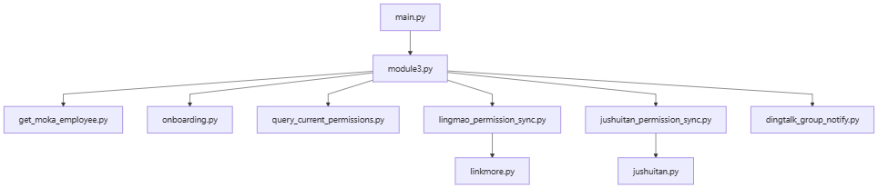

00 Architecture
权限自动化系统架构设计
1. 架构目标
把企业内部权限处理流程拆分为职责清晰的模块，使钉钉消息、Dify 识别、影刀 RPA、Python 脚本和业务系统接口形成完整自动化链路。
2. 总体架构
钉钉用户 / 机器人 → 服务端消息接收脚本 → Dify 应用 / 工作流 → 影刀 RPA 任务 → Python 权限处理脚本 → 业务系统接口 → 执行结果整理 → 钉钉结果回传。

3. 数据流设计
用户请求
自然语言请求由 Dify 提取为 employee_name、target_system、action、permission_keyword、department_or_template、dry_run 等结构化字段，再组装为 query 传给影刀。
Cookie 与员工信息
聚水潭和领猫 Cookie 均由影刀登录业务系统后获取，不由用户或 Dify 提供。员工姓名交给 Moka 查询模块，用于确认员工、部门和权限模板。
权限表与结果回执
钉钉权限对照表把业务表达转换为系统角色、组织和权限组；Python 处理完成后生成执行状态、员工、系统、权限模板和错误信息，并通过钉钉回传。
4. 主要参数
| 参数 | 作用 |
| employee_name | 目标员工姓名 |
| target_system | 领猫、聚水潭或全部 |
| action / intent_type | 查询、新增、调整、同步或对比 |
| permission_keyword | 用户明确提出的权限词 |
| source_employee_name | 参考员工 |
| need_confirm | 是否需要人工确认 |
| dry_run | 是否仅预览执行 |
5. 模块调用关系

| 模块 | 职责 |
| main.py | 影刀主流程入口 |
| module3.py | 参数解析、动作判断与任务分发 |
| get_moka_employee.py | 查询员工基础信息 |
| onboarding.py | 查询钉钉权限表 |
| query_current_permissions.py | 只读查询当前权限 |
| lingmao_permission_sync.py | 领猫权限同步与校验 |
| jushuitan_permission_sync.py | 聚水潭权限同步与校验 |
| dingtalk_group_notify.py | 钉钉结果回执 |